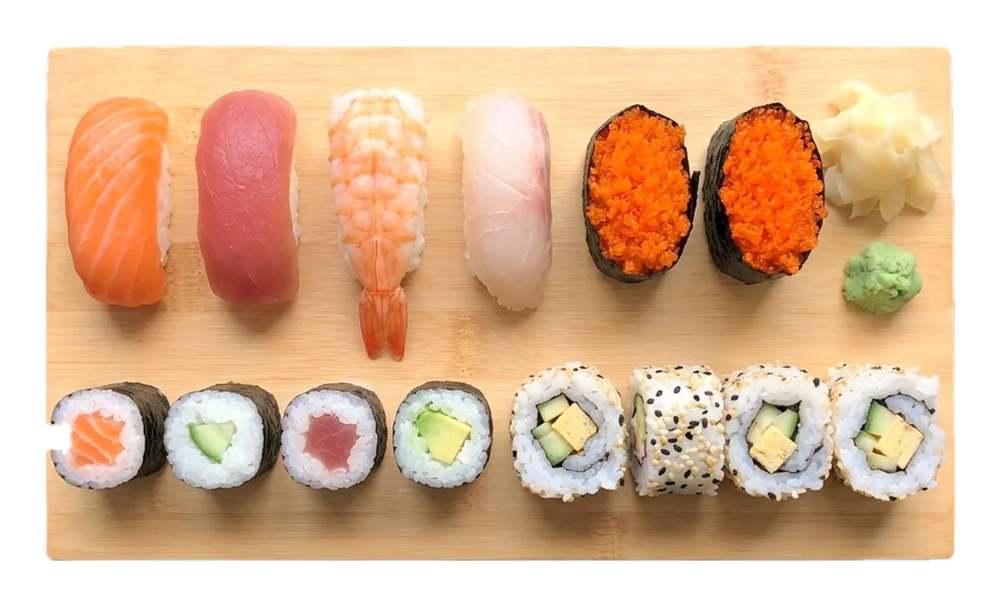

sushi
sushi mix lamondi
14 Stück Nigiri, Gunkan und Maki — jeden Tag neu zusammengestellt14 pieces of nigiri, gunkan and maki — a new selection every day

Seit 2000 ist lamondi ein Familienrestaurant — Restaurant, Sushibar und Bistro in einem, direkt gegenüber dem Bayreuther Hauptbahnhof. A family restaurant since 2000 — lamondi is restaurant, sushi bar and bistro in one, right across from Bayreuth's main station.
Unser Sushi wird jeden Tag frisch von Hand gerollt. Dazu kochen wir asiatisch und mediterran, mit einer eigenen vegetarischen Karte; an der Bar gibt es Cocktails, offene Weine und Bier aus Bayreuth. Ob kurze Mittagspause vor dem Zug oder ein langer Abend mit Freunden — bei uns fühlen Sie sich wie zu Hause. Our sushi is rolled fresh by hand every day. Our kitchen cooks Asian and Mediterranean, with a vegetarian menu of its own; at the bar you'll find cocktails, wine by the glass and beer from Bayreuth. Whether it's a quick lunch before your train or a long evening with friends — make yourself at home.
Bahnhofstraße 23
95444 Bayreuth
route planenget directions

14 Stück Nigiri, Gunkan und Maki — jeden Tag neu zusammengestellt14 pieces of nigiri, gunkan and maki — a new selection every day

Mit Zuckerschoten, Röstkartoffeln und Paprika — eines unserer wechselnden Tagesgerichte. Fragen Sie unser Team, was heute auf der Karte steht.With snap peas, roast potatoes and peppers — one of our changing dishes of the day. Ask our team what's on today.

Argentinisches Angus-Filet, rund 200 g, mit Gemüse und SalatArgentinian Angus fillet, around 200 g, with vegetables and salad

Mangoparfait mit frischen FrüchtenMango parfait with fresh fruit
Das Herz unseres Gastraums: eine weiße Wand mit warm beleuchteten Nischen im Schachbrettmuster, darin Buddhas, Vasen, Schalen und Skulpturen. Wer einmal bei uns war, erkennt sie sofort wieder.The heart of our dining room: a white wall with warmly lit niches in a checkerboard pattern, holding Buddhas, vases, bowls and sculptures. Once you've been here, you'll always recognise it.
tippen sie auf eine nische, um das licht zu schaltentap a niche to switch its light
Geburtstag, Firmenfeier oder Familienfest — bei uns im lamondi oder bei Ihnen vor Ort.Birthdays, company events or family celebrations — here at lamondi or at your place.
Wir richten Ihre Feier bei uns im Restaurant aus oder bringen Sushi-Platten und Fingerfood als Catering zu Ihnen. Menü und Mengen stimmen wir gemeinsam mit Ihnen ab.We host your celebration here in the restaurant or bring sushi platters and finger food to you as catering. We plan the menu and quantities together with you.
anfrage sendensend an enquiry